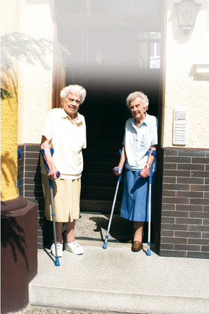

Patienten/
Kunden
„kompetent, zuverlässig, vor Ort“ bedeutet, dass wir uns mit Fachlichkeit und Menschlichkeit in Ortsnähe allen Patienten bzw. Kunden zuwenden und damit einen wesentlichen Auftrag der Kirchengemeinden von
St. Paul, St. Thomas und der Friedenskirche erfüllen.
Auf Wunsch vermitteln wir seelsorgerliche Begleitung.
Christliches
Menschenbild
Wir sehen den Menschen als Geschöpf Gottes. Deshalb orientieren wir uns in unserem Handeln an den christlichen Grundwerten:
Menschenwürde, Nächstenliebe, Ehrlichkeit, Toleranz und Vertrauen. Das bedeutet für uns, jedem Hilfebedürftigen, ungeachtet seines sozialen Standes, seiner Religion, seines Alters oder seiner Herkunft, Respekt und Achtung entgegenzubringen.
Werte
Das Wohlbefinden und die Selbstbestimmung der Menschen, die unsere Hilfe in Anspruch nehmen, ist uns wichtig. Mit der ganzheitlichen Pflege geben wir Hilfe zur Selbsthilfe mit dem Ziel, Selbständigkeit solange, wie möglich zu erhalten und zu fördern. Wir begegnen allen Patienten und Angehörigen einfühlsam und verständnisvoll.